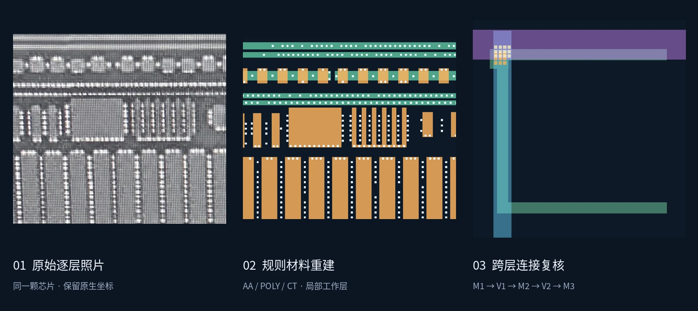
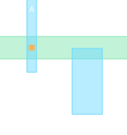
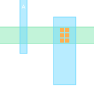
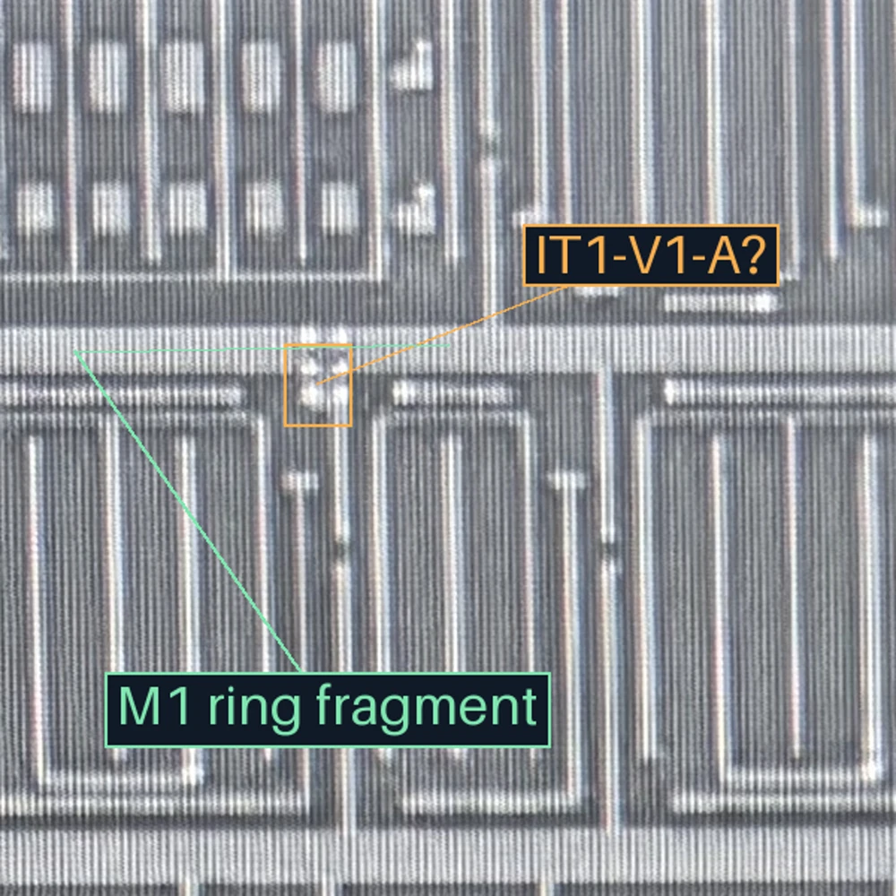
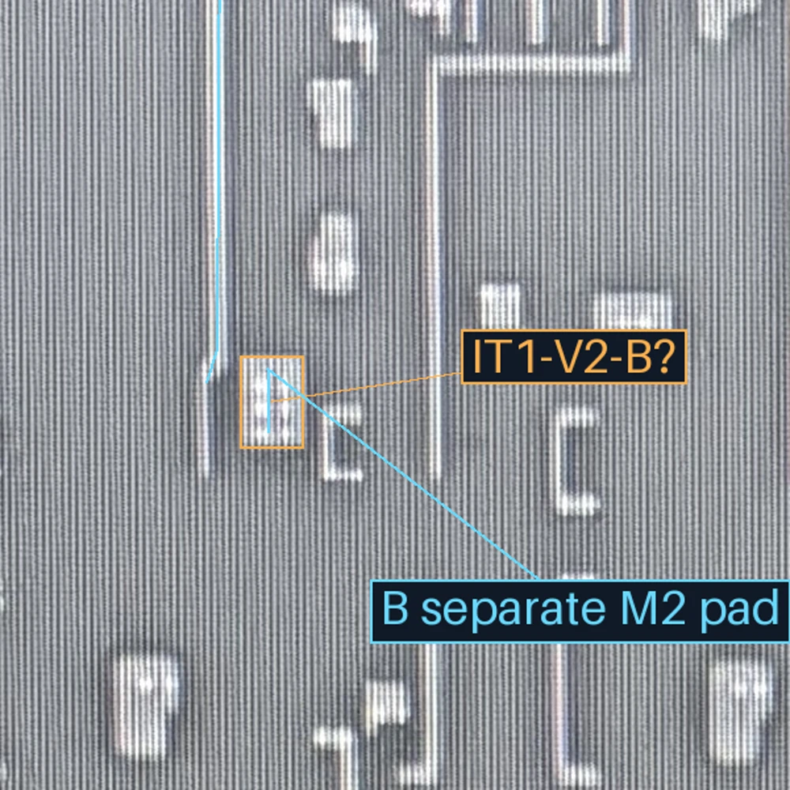

AA已知任务历史验收
接续、局部改善、防退化三项；同Agent开卷记录，不是新模型准确率。
ANALOG IC × COMPUTER VISION × AI WORKFLOW
将模拟版图经验转化为AI可执行、可复核的重建约束。从同一颗芯片的逐层照片出发，逐步恢复材料、器件和跨层关系。
研究原型 · 人机协作 · 所有展示来自实际项目样本

LEARNING FROM A REAL FAILURE
一次保留下来的AI错误，如何变成下一次的检查规则。
旧候选把V1接到窄M2-A，并用一个代理方框表示整组孔。用户指出圈内是六孔，应接到宽M2-B。
数量和承载已审；孔径、间距及具体边界仍为候选。下图是各自的规则模型，不是原图投影。


■ M1■ M2■ V1仅查看本接口三层
M1侧观察V1，M2侧查承载。两图使用各自原生坐标，没有直接叠投；历史标签“IT1-V1-A”是稳定ID，不代表承载A。


MEASURED WITH SCOPE
接续、局部改善、防退化三项；同Agent开卷记录，不是新模型准确率。
工作层规模：，是重建对象数量。
未解决范围：处区域；不能除以对象数作为未知率。
尚未测量：新模型准确率、独立留出成绩、全项目人审耗时与速度改善。
| 任务 | 评分方式 | 考点与边界 |
|---|
全部来自同一颗芯片的开发历史，留出任务0。两个机器评分任务共20条部分参考，未知关系要求显式保留；其余6项按人工rubric复核。
SELECTED WORK
切换图层、选择器件，查看照片与结构之间的对应。
ENGINEERING APPROACH
原图不变，保留层名、原生坐标与哈希。
识别材料及结构，结合上下层保留替代解释。
参数化重建，检查间距、包围和修改范围。
确认关键歧义，已有成果进入防退化基准。
PROJECT OWNERSHIP
区分材料、栅端、共享扩散及跨层承载，将实际设计经验落实为重建约束。
划分AI、脚本和人工职责，设计局部接续、未知状态与防退化检查。
主导需求与验收，驱动Python工具和可视化界面的开发，依据真实样本持续纠偏。
CURRENT STATUS
当前是基于一颗芯片的研究原型。页面使用冻结的项目数据，切换视图不调用在线AI。